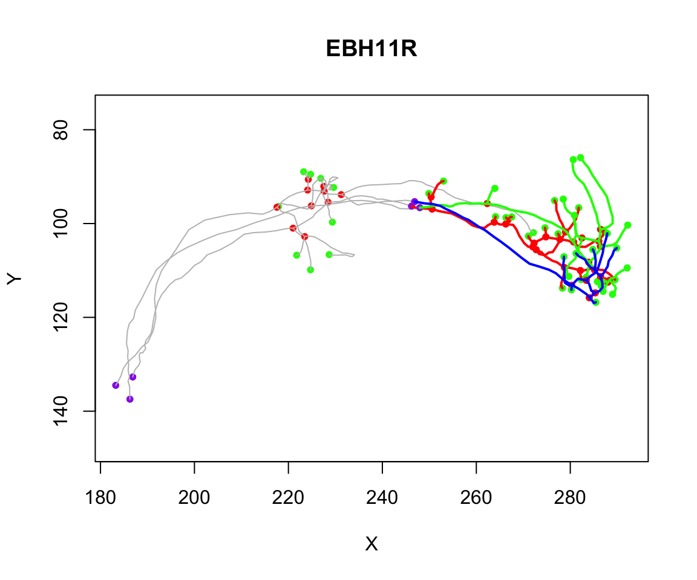

Working with individual neurons as graph structures
Gregory Jefferis
2019-08-06
Source:vignettes/neurons-as-graph.Rmd
neurons-as-graph.RmdIntroduction
Neurons can helpfully be treated as graphs (branching trees) in which nodes connected by edges define the morphology of the neuron. The nat package provides a number of built-in functions that allow you to analyse the branching structure of graphs
https://natverse.github.io/nat/reference/index.html#section-neurons-as-graphs-
or use aspects of the branching structure to manipulate graphs. Examples of such functions include the strahler_order function which calculates the Strahler branch order for each node or segment in the neuron or the spine function that extracts the longest path across the neuron.
More sophisticated analysis and manipulations can be carried out by converting neuron objects into ngraph objects.
Neurons as Graphs
A neuron will typically be a graph in the form of a binary tree. We follow the convention of the Matlab trees toolbox by Hermann Cuntz and colleagues in treating the root (typically the soma) as the origin of the graph and then having directed edges leaving the root.

neuron-as-graph
Nodes will be one of a:
- root
- branch point
- end point
- continuation point
Each node will have a numeric identifier or label (an arbitrary integer stored the in the neuron’s PointNo field that may have come from an external source) as well an index (an integer starting at 1 and increasing without gaps). Although these two identifiers may often be the same, code should never rely on this being the case. In the wild, one frequently encounters cases where e.g. the numeric labels
- have gaps because a neuron was edited
- are not in the same order as the vertices
- have some other significance e.g. are globally unique across all neurons in a database and therefore have large values (which may be challenging for R to to represent give its maxint of 2^31 - 1=2.147483610^{9})
## root nodes segments branchpoints endpoints cable.length
## 1 1 180 33 16 18 297.1763We can extract the points as follows:
## [1] 1## [1] 34 48 51 75 78 95 98 99 108 109 115 119 135 143 160 169## [1] 1 42 59 62 80 85 96 100 102 112 117 121 134 148 154 165 172
## [18] 180Segments are unbranched connected sequences of nodes that terminate in a branch point or end point.
Built-in neuron graph functions
We will give a few examples of the use of the built-in functions that treat neurons as graphs.
Strahler Order
The branching structure of a neuron is commonly summarised by calculating the Strahler Order.
n=Cell07PNs[[1]]
so=strahler_order(n)
orders=1:max(so$points)
for (i in orders) {
plot(subset(n, so$points==i), col=i, add = i!=1, boundingbox = boundingbox(n))
} Note the use of multiple calls to
Note the use of multiple calls to plot.neuron using the add=TRUE argument for all but the first plot. Note also the use of the boundingbox argument/function in order to ensure that the plot is set up with appropriate axes for the whole neuron even if only part of it is plotted in the first call to plot.
Spine
You can find the longest path across a neuron using the spine function.

spine has a variety of options that you can use to control the results.
Segment graph
You can use the segmentgraph function to make a simplified representation of the branching structure of the neuron. In this object (which has class igraph) each unbranched segment in the original neuron (which might have contained many vertices) is collapsed to a single edge joining the branch points (which are retained).

ngraph objects
The nat package provides a bridge to a rich cross-platform graph library, igraph. We provide a class ngraph that provides a thin wrapper for the igraph class. This looks after things that we might need to know about a neuron (like the 3D coordinates of each node) while still giving access to all of the graph functions in the igraph package.
## [1] "ngraph" "igraph"## IGRAPH c9517cc DN-- 180 179 --
## + attr: name (v/n), X (v/n), Y (v/n), Z (v/n), diam (v/n)
## + edges from c9517cc (vertex names):
## [1] 1-> 2 2-> 3 3-> 4 4-> 5 5-> 6 6-> 7 7-> 8 8-> 9 9->10 10->11
## [11] 11->12 12->13 13->14 14->15 15->16 16->17 17->18 18->19 19->20 20->21
## [21] 21->22 22->23 23->24 24->25 25->26 26->27 27->28 28->29 29->30 30->31
## [31] 31->32 32->33 33->34 34->35 35->36 36->37 37->38 38->39 39->40 40->41
## [41] 41->42 34->43 43->44 44->45 45->46 46->47 47->48 48->49 49->50 50->51
## [51] 51->52 52->53 53->54 54->55 55->56 56->57 57->58 58->59 51->60 60->61
## [61] 61->62 48->63 63->64 64->65 65->66 66->67 67->68 68->69 69->70 70->71
## [71] 71->72 72->73 73->74 74->75 75->76 76->77 77->78 78->79 79->80 78->81
## + ... omitted several edgesYou can use functions such as
## [1] 89to find the length of the longest path across the neuron. This is defined in terms of the number of intervening nodes. You can also make a graph in which the edge weights are the euclidean distance between the connected 3D nodes:
## [1] 186.0859This gives you the longest path length (geodesic) across the graph in units of µm in this case.
Note that although you can do library(igraph), it adds a lot of functions to the search path, some of which have name clashes, so I often just use the package name (igraph::) prepended to the function that I want to call.
walking along ngraph objects
You can use the graph representation of neurons e.g. to find the path between nodes.
g=as.ngraph(Cell07PNs[[1]], weights=TRUE)
eg=endpoints(g)
p=igraph::shortest_paths(g, from=1, to=180)
p$vpath[[1]]## + 90/180 vertices, named, from 116cd31:
## [1] 1 2 3 4 5 6 7 8 9 10 11 12 13 14 15 16 17
## [18] 18 19 20 21 22 23 24 25 26 27 28 29 30 31 32 33 34
## [35] 43 44 45 46 47 48 63 64 65 66 67 68 69 70 71 72 73
## [52] 74 75 86 87 88 89 90 91 92 93 94 95 97 98 103 104 105
## [69] 106 107 108 135 155 156 157 158 159 160 166 167 168 169 173 174 175
## [86] 176 177 178 179 180## Warning in igraph::shortest_paths(g, from = 180, to = 1): At
## structural_properties.c:4597 :Couldn't reach some vertices## + 1/180 vertex, named, from 116cd31:
## [1] 1# mode all will find the path irrespective of direction of links, which are
# directed from the soma
p3=igraph::shortest_paths(g, from=180, to=1, mode = 'all')
p3$vpath[[1]]## + 90/180 vertices, named, from 116cd31:
## [1] 180 179 178 177 176 175 174 173 169 168 167 166 160 159 158 157 156
## [18] 155 135 108 107 106 105 104 103 98 97 95 94 93 92 91 90 89
## [35] 88 87 86 75 74 73 72 71 70 69 68 67 66 65 64 63 48
## [52] 47 46 45 44 43 34 33 32 31 30 29 28 27 26 25 24 23
## [69] 22 21 20 19 18 17 16 15 14 13 12 11 10 9 8 7 6
## [86] 5 4 3 2 1## [1] TRUE## 180
## 1 186.0859## 1
## 180 186.0859You can also ask for nodes upstream or downstream of a given starting node. For example the neurons in the Cell07PNs set have a tag called AxonLHEP that defines the entry point of the axon into the lateral horn neuropil of the fly brain. Here we defined
n=Cell07PNs[[1]]
g=as.ngraph(n)
# find the nodes distal to this point
# nb you must set unreachable=F if you only want to get downstream nodes
igraph::dfs(g, neimode='out', unreachable = FALSE, root=n$AxonLHEP)## $root
## [1] 71
##
## $neimode
## [1] "out"
##
## $order
## + 180/180 vertices, named, from 44b3934:
## [1] 72 73 74 75 76 77 78 79 80 81 82 83 84 85
## [15] 86 87 88 89 90 91 92 93 94 95 96 97 98 99
## [29] 100 101 102 103 104 105 106 107 108 109 110 111 112 113
## [43] 114 115 116 117 118 119 120 121 122 123 124 125 126 127
## [57] 128 129 130 131 132 133 134 135 136 137 138 139 140 141
## [71] 142 143 144 145 146 147 148 149 150 151 152 153 154 155
## [85] 156 157 158 159 160 161 162 163 164 165 166 167 168 169
## [99] 170 171 172 173 174 175 176 177 178 179 180 <NA> <NA> <NA>
## [113] <NA> <NA> <NA> <NA> <NA> <NA> <NA> <NA> <NA> <NA> <NA> <NA> <NA> <NA>
## [127] <NA> <NA> <NA> <NA> <NA> <NA> <NA> <NA> <NA> <NA> <NA> <NA> <NA> <NA>
## + ... omitted several vertices
##
## $order.out
## NULL
##
## $father
## NULL
##
## $dist
## NULL# the proximal nodes back to the soma (including any branches)
igraph::dfs(g, neimode='in', unreachable = FALSE, root=n$AxonLHEP)## $root
## [1] 71
##
## $neimode
## [1] "in"
##
## $order
## + 180/180 vertices, named, from 44b3934:
## [1] 72 71 70 69 68 67 66 65 64 63 48 47 46 45
## [15] 44 43 34 33 32 31 30 29 28 27 26 25 24 23
## [29] 22 21 20 19 18 17 16 15 14 13 12 11 10 9
## [43] 8 7 6 5 4 3 2 1 <NA> <NA> <NA> <NA> <NA> <NA>
## [57] <NA> <NA> <NA> <NA> <NA> <NA> <NA> <NA> <NA> <NA> <NA> <NA> <NA> <NA>
## [71] <NA> <NA> <NA> <NA> <NA> <NA> <NA> <NA> <NA> <NA> <NA> <NA> <NA> <NA>
## [85] <NA> <NA> <NA> <NA> <NA> <NA> <NA> <NA> <NA> <NA> <NA> <NA> <NA> <NA>
## [99] <NA> <NA> <NA> <NA> <NA> <NA> <NA> <NA> <NA> <NA> <NA> <NA> <NA> <NA>
## [113] <NA> <NA> <NA> <NA> <NA> <NA> <NA> <NA> <NA> <NA> <NA> <NA> <NA> <NA>
## [127] <NA> <NA> <NA> <NA> <NA> <NA> <NA> <NA> <NA> <NA> <NA> <NA> <NA> <NA>
## + ... omitted several vertices
##
## $order.out
## NULL
##
## $father
## NULL
##
## $dist
## NULLNote that dfs (depth first search) provides a good way to visit all the nodes of the neuron
Let’s use this to make a function that prunes neurons downstream of this axon entry point:
prune_from_lhep <- function(n, ...) {
g=as.ngraph(n)
downstream_indices=igraph::dfs(g, root = n$AxonLHEP, unreachable = FALSE)$order
prune_vertices(n, verticestoprune = downstream_indices, invert = TRUE)
}
pruned=nlapply(Cell07PNs[1:3], prune_from_lhep)
plot(Cell07PNs[1:3], col='grey')
plot(pruned, lwd=2, add = T)
The pruned neurons show up in red, green, and blue in the above plot.